(ii) Solution
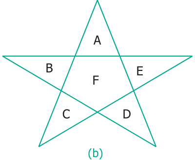
A, B, C, D, & E are five triangles.
No combination of these triangles taken 2 at a time, form any triangle.
Only the combinations of A, F & C; A, F & D; B, F & E; B, F & D and C, F & E form triangles when taken 3 triangles at a time. Hence, the total number of triangles \(= 5 + 5 = 10\).
- Suppose, you have two shorts, one is black and the other one is blue; three shirts which are in white, blue and red. You again wish to make different combinations, but you always want to make sure that the shorts and shirt that you wear are of different colours. List and check how many combinations are possible now.
- You have two red and two blue blocks. How many different towers can you build that are four blocks high using these blocks? List all the possibilities.
- In the following magic triangle, arrange the numbers from 1 to 6, so that you get the same sum on all its sides.
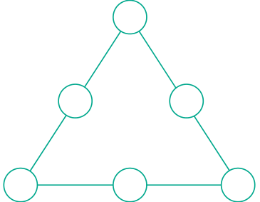
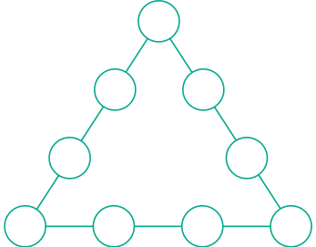
- Using the numbers from 1 to 9
- Can you form a magic triangle?
- How many magic triangles can be formed?
- What are the sums of the sides of the magic triangle?
- Arrange the odd numbers from 1 to 17 without repetition to get a sum of 30 on each side of the magic triangle.

- Put the numbers 1, 2, 3, 4, 5, 6, & 7 in the circles so that each straight line of three numbers add up to the same total.
- Place the number 1 to 12 in the 12 circles so that the sum of the numbers in each of the six lines of the star is 26. Use each number from 1 to 12 exactly once. Find more possible ways?
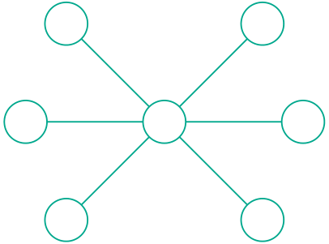
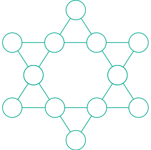
- How many Triangles are there in each of the following figures?
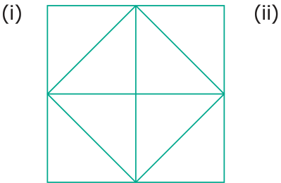
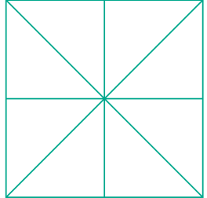
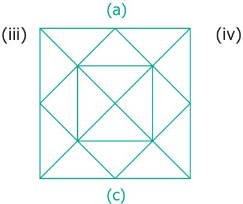
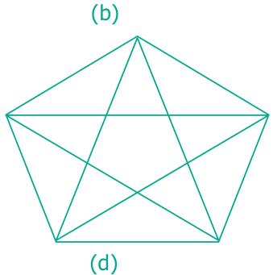
- Find the number of dots in the tenth figure of the following patterns.
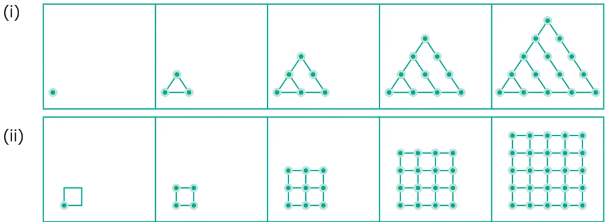
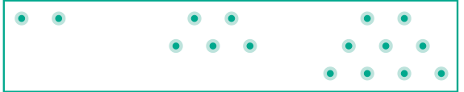
- Draw the next pattern.
- Prepare a table for the number of dots used for each pattern.
- Explain the pattern.
- Find the number of dots in the 25th pattern.
- Count the number of squares in each of the following figures?
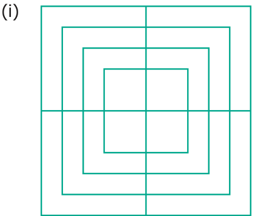
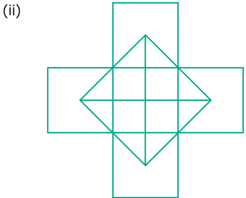
- How many Circles are there in the following figure?
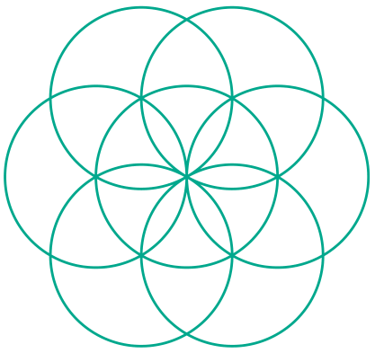
- Find the minimum number of straight lines used in forming the following figures.
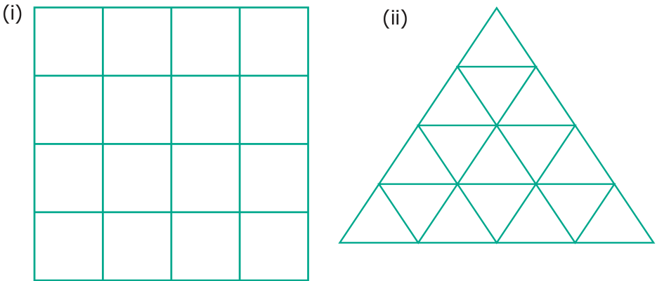